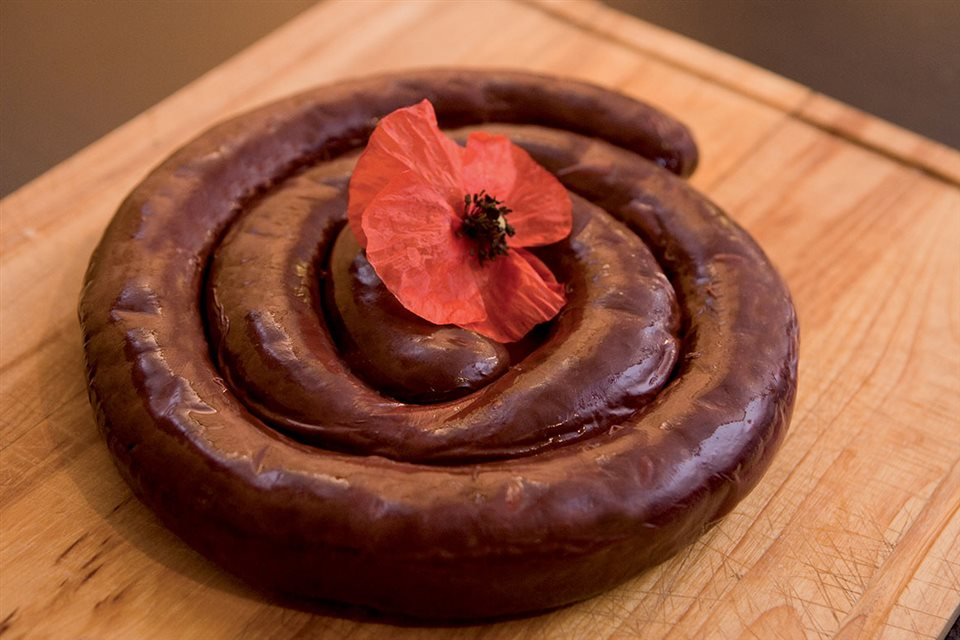

Blood Pudding
Blood pudding, or "boudin noir" if you're feeling fancy.

It's the deep, dark blood.
Ingredients
- Pig's blood.
- Pork fat. Greasy, slippery.
- Onions, finely chopped. They sting your eyes.
- Stale bread or breadcrumbs
Recipes instructions
- Start with the onions, frying them until they're translucent.
- Mix the blood, the pork fat, and those onions in a bowl.
- Throw in the breadcrumbs or stale bread. They'll soak up the blood.
- Shape them into whatever form feels right. Cook them until they're done, but not too done. There's a fine line between perfection and disaster.
Blood Pudding. Pour yourself a drink, eat, and reflect.
---
Return to main page